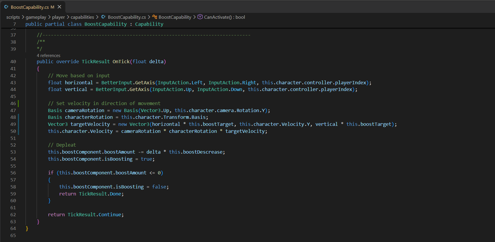
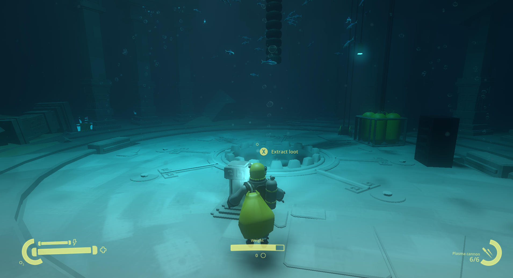
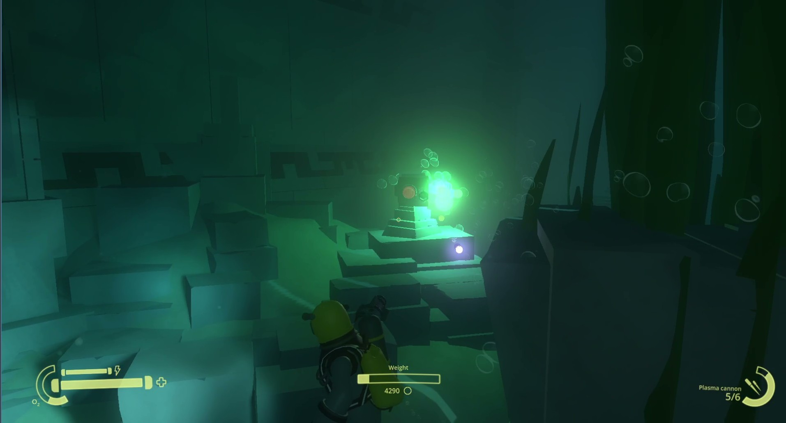

Dead Rift - Polysoup Interactive
Unreleased prototype
2025/6 - 2025/8
Dead Rift was a prototype for co-op loot extraction game set inside an ancient structure buried deep under the sea. Up to 4 players venture down to depths of the ocean to retrieve a long lost treasure of an ancient civilization. On their way they face puzzles, traps and creatures while trying to manage high pressure and limited oxygen supply.
Project Structure
When I started on the project, it already contained a fully working player character, simple combat and enemy, and mainly a structure of Entities and Capabilities. Entity-Capability architecture is a custom implementation of architecture close to Entity-Component, which offers better composition and modularity for game entities.Each entity runs an update over all of its capabilities. Capability is a base node class, which can be used to define very small and specific behavior of an entity, such as Boost (Dodge) Capability.

Contribution
- Additional player features like oxygen, dodge, healing and swapping between gadgets
- System of triggers and moving physical object used for obstacles and puzzles
- Looting, inventory and weight affecting the player movement
- Shop and unlocking of gadgets and upgrades (new weapons, extended oxygen tank)
- Turret enemy: Static turret shooting at players with limited ammo
- Blowfish enemy: Creeper-like enemy that follows player and explodes
- Enemy group swarming behavior
- Player HUD and other UIs

Based on project vision we started prototyping base features and games mode. Starting with Looting and inventory, oxygen management, descending to lower level and basic puzzle system we’ve got a basic gameplay. Each step of the way I worked closely with game authors and 3D artists to quickly prototype and iterate features until we found a satisfying result. I was working further on puzzles, gadgets and weapons, traps and various types of enemies.
